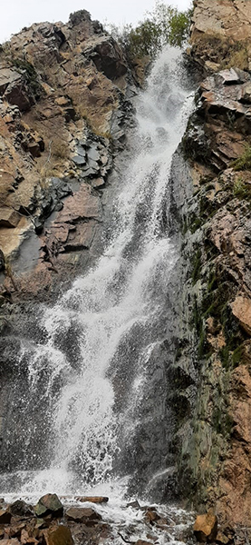
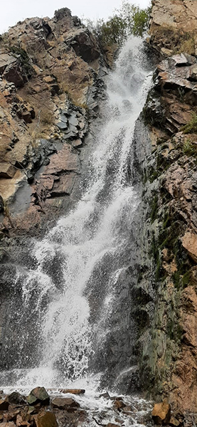

Иссыкское озеро — одно из популярнейших туристических мест в Алматинской области. Можно устроить пикник на побережье и отдохнуть, любуясь гладью воды и наслаждаясь свежим горным воздухом. Время поездки от границы города составляет приблизительно 1,5 часа.


Тургеньское ущелье и расположенный в нём водопад Медвежий — одно из красивейших мест для отдыха близ Алматы. Высота водопада составляет 30 метров. А путь к нему пролегает через красивую горную тропу.


 

Чарынский каньон — это живописная природная местность, с удивительным ландшафтом. Самое примечательное место в каньоне — Долина замков. Долина замков представляет собой ущелье со скалами, самых удивительных форм. В длину это ущелье около 2 км. пройдя по ущелью можно выйти к реке Чарын и устроить пикник, любуясь красотой природы.

Кольсайское озеро — расположенное среди гор на высоте 1 700 метров над уровнем моря, это озеро привлекаетприродной красотой. На его берегах растут вечно зелённые ели.
Капчагайское водохранилище зимой необычайно красиво. Всё из-за льда. Вода замерзает и под воздействием ветра, течений самой воды, а также приливов и отливов, глыбы льда смещаются и сталкиваются меж собой, образуя нагромождения ледяных обломков. Эти обломки и называются ледяные торосы.